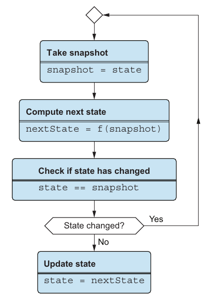

فصل ۸ · صص. ۱۶۳–۱۷۴
کنترل پیشرفتهی concurrency
Advanced concurrency control
Data-Oriented Programming, 1st Edition
ایراد دوم تئو این بود که فاز commit فصل ۵ thread-safe نیست. قفلها درستش میکردند، ولی نگه داشتن سیستمی آزاد از deadlock را سخت میکنند. یکشنبه، تئو و جو درست در همان لحظهها به هم تلفن زدند و بوق اشغال گرفتند: «یک deadlock!» (صص. ۱۶۳–۱۶۴). روش DOP در عوض از سازوکاری بی قفل کار میکشد، یعنی atom (ص. ۱۶۳):
- متد
getمقدار کنونی را برمیگرداند. - متد
setاز رویش مینویسد. - متد
swap(f)عکسی میگیرد، مقدارf(snapshot)را حساب میکند، و اگر state هنوز همان عکس باشد با compare-and-set اتمی commitش؛ وگرنه از نو تلاش میکند (صص. ۱۶۶–۱۶۸).
خواندنها هیچ پناهی نمیخواهند، چون دادهی immutable همیشه عکسی سازگار است (ص. ۱۶۴). فصل سه چیز با atom میسازد:
- شمارندهای thread-safe (listing ۸.۲).
- یک cache thread-safe در حافظه، یعنی map رشتهای که با ارجاع سنجیده میشود (listing ۸.۷).
- کل state سیستم: پوشاندن
SystemConsistency.reconcileدرswapفاز commit بخش ۱ را thread-safe میکند (listingهای ۸.۹ و ۸.۱۰، صص. ۱۶۵–۱۷۴).
تصویر تئو: mutexها مانند تلفن زدناند و atomها مانند پیامک (ص. ۱۷۴). فصل بیشتر برای زبانهای multi-threaded مهم است، مانند Java و C# و Python و Ruby؛ و JavaScriptاش چنان نوشته شده که گویی JavaScript multi-threaded است (ص. ۱۶۳).
فهرست خود فصل (از فهرست مطالب کتاب)
از فهرست خود کتاب، یعنی bookmarkهای PDF؛ شمارهی صفحهها چاپیاند.
- ۸.۱ پیچیدگی قفلها — ص. ۱۶۴
- ۸.۲ شمارندهی thread-safe با atom — ص. ۱۶۵
- ۸.۳ کتابخانهی cache thread-safe با atom — ص. ۱۷۰
- ۸.۴ مدیریت state با atom — ص. ۱۷۲
- خلاصه — ص. ۱۷۴
از کتاب
۸.۱ پیچیدگی قفلها
پس از دوچرخهسواری ۵۰مایلی از پل گلدنگیت، تئو به جو نمیرسد؛ خط همیشه اشغال است. دوشنبه کشف میکنند که درست در همان لحظهها به هم تلفن میزدهاند (ص. ۱۶۴).
تئو هر دو خواندن و نوشتن را با mutex پناه میدهد. بی قفلی روی خواندن، نوشتنی در رشتهای دیگر میتوانست خواندنی را منطقی ناسازگار کند؛ و کلون کردن داده پیش از آن، وقتی داده بزرگ است، خیلی گران است (ص. ۱۶۴). در DOP هیچکدام لازم نیست. نوشتنی هیچوقت دادهی زیر خواندن را mutation نمیدهد، پس «خواندنی همیشه روی عکسی از داده کار میکند» (ص. ۱۶۴).
داستانهای جنگی deadlockشان (ص. ۱۶۵):
- جو، ده سال پیشتر: قفلی که سر افتادن استثنایی در بخشی بحرانی رها نشد.
- تئو، سال پیش: دو قفل که به ترتیب درست رها نشدند.
در pipeline هم قفل هست: max_active_runs=1 در Airflow و concurrencyPolicy: Forbid در CronJob همان قفلاند.
?نوبت شما · CronJob یک job دارد که گاهی از فاصلهی زمانبندی طولانیتر میشود. Forbid چه میکند و چه هزینهای دارد؟دیدن پاسخ
اجرای بعدی را رد میکند تا دو نمونه همزمان نوشتن نکنند، ولی اجراهای ردشده دیگر انجام نمیشوند. قفل درستی را ساده میکند ولی throughput را میگیرد و میتواند کار را گرسنه بگذارد (صص. ۱۶۴–۱۶۵).
از کتاب
۸.۲ شمارندهی thread-safe با atom
مثال شمارندهای از دسترسیهای پایگاه داده است، که هر دقیقه log میشود (ص. ۱۶۵).
| رویکرد | افزودن | خواندن |
|---|---|---|
| mutex (listing ۸.۱، صص. ۱۶۵–۱۶۶) | mutex.lock(); counter = counter + 1; mutex.unlock(); | قفلشده هم هست |
| atom (listing ۸.۲، ص. ۱۶۶) | counter.swap(x => x + 1) | counter.get() |
| متد | توضیح (جدول ۸.۱، ص. ۱۶۶) |
|---|---|
get | مقدار کنونی را برمیگرداند |
set | از روی مقدار کنونی مینویسد |
swap | مقدار کنونی را با تابعی بهروز میکند |
چطور swap بی قفل thread-safe است. مقدار پسین را حساب میکند، و پیش از دستکاری atom میسنجد که سر حساب کردن آن مقدار عوض شده یا نه. اگر شده باشد، swap باز تلاش میکند (صص. ۱۶۷–۱۶۸):


تابع atomicCompareAndSet مقدار state را اتمی روی مقداری تازه میگذارد اگر، و تنها اگر، هنوز با مقدار کهنهی دادهشده برابر باشد، و برمیگرداند که کامیاب شد یا نه (ص. ۱۶۸). این compare-and-swapی است که زبان میدهد و به CPU تکیه دارد. زبان Java کلاس AtomicReference را در java.util.concurrent.atomic دارد، زبان Python کتابخانهی atomos را، زبانهای Ruby و C# مال خودشان را، و JavaScript که single-threaded است هیچکدام را نمیخواهد (جدول ۸.۲، صص. ۱۶۸–۱۶۹). کلاس Atom در Java مقدار stateش را در AtomicReference ذخیره میکند و از generic کار میکشد (listingهای ۸.۴ و ۸.۵، صص. ۱۶۹–۱۷۰).
تابع swap میتواند تا ابد حلقه بزند؟ نه. شکست خوردن compare-and-set یعنی atom در رشتهای دیگر عوض شده، پس «در این مسابقهی میان رشتهها همیشه برندهای هست» (ص. ۱۷۰). گرسنگی در نظر شدنی است، با هزاران رشته که هیچ کاری جز swap نمیکنند. جو هیچوقت ندیدهاش، چون در کار واقعی رشتهها پس از swap کار واقعی میکنند، مانند دسترسی به پایگاه داده یا I/O، که به دیگران شانسشان را میدهد (ص. ۱۷۰).
Vault note: در listing ۸.۴، عبارت return nextState; پس از حلقهی while (true) نشسته، جایی که nextState بیرون دامنه است، پس آن Java همانطور که چاپ شده کامپایل نمیشد. نمونهی ۸.۳، یعنی version JavaScript، درون حلقه و پس از compare-and-set کامیاب برمیگردد، که ساختار خواسته همین است (صص. ۱۶۷–۱۶۹).
امتحان کنید
swap یا قفل
باز کردن در صفحهی کامل ↗ · این شبیهسازی مدل خود vault از سازوکاری است که کتاب شرح میدهد.
از کتاب
۸.۳ کتابخانهی cache thread-safe با atom
وقتی پرسشهای پایگاه داده زیاد فرق نمیکنند، برآمدهایشان را در حافظه cache کنید، بهشکل map رشتهای از پرسش به خروجی (صص. ۱۷۰–۱۷۱). چون آن map immutable است، version قفلدار تئو تنها بهروزرسانی را پناه میدهد، نه خواندن را (listing ۸.۶). version atom با cache.get() میخواند و با cache.swap(oldCache => _.set(oldCache, query, result)) بهروز میکند (listing ۸.۷، صص. ۱۷۱–۱۷۲).
تئو نگران است که swap دو map رشتهای را میسنجد، که شاید کند باشد. نمیسنجد، چون آنها را با ارجاع میسنجد: با دادهی immutable این ایمن و فوقتند است (ص. ۱۷۲).
از کتاب
۸.۴ مدیریت state با atom
تابع SystemState.commit از بخش ۱ تابع SystemConsistency.reconcile را بی پناه صدا میزند، پس دو رشته میتوانند concurrent اجرایش کنند (listing ۸.۸، صص. ۱۷۲–۱۷۳). چاره دادهی سیستم را در atomی نگه میدارد (صص. ۱۷۳–۱۷۴):
class SystemState {
systemData;
constructor() { this.systemData = new Atom(); }
get() { return this.systemData.get(); }
commit(previous, next) {
this.systemData.swap(function(current) {
return SystemConsistency.reconcile(current, previous, next);
});
}
}سوارشده از listingهای ۸.۹ و ۸.۱۰ (ص. ۱۷۳)؛ اعتبارسنجی انداخته شده، مانند listing ۸.۸ کتاب.
اگر mutationی دیگر سر اجرای reconcile commit کند، آن compare-and-set شکست میخورد و swap باز در برابر state تازهتر reconciliation میدهد. فاز حساب دستنخورده میماند.
sequenceDiagram
participant A as Mutation A
participant At as Atom (system state)
participant B as Mutation B
A->>At: get() → V1 (previous)
B->>At: get() → V1 (previous)
Note over A,B: both calculate in isolation
B->>At: swap(reconcile) — snapshot V1, CAS V1→V2 ✓
A->>At: swap(reconcile) — snapshot V2, merge, CAS V2→V3 ✓
Note over A,At: if B committed during A's reconcile,<br/>A's CAS fails and A reconciles againنمودار ترتیبی vault از listing ۸.۱۰.
تئو: «mutexها مانند تلفن زدناند و atomها مانند پیامک» (ص. ۱۷۴).
اجرا کنید: آزمایش atom رشتهها را با درهمبافندهای با seed زمانبندی میکند و بهروزرسانیهای گمشده و انتظارهای mutex و تلاشهای دوبارهی compare-and-set را میشمارد.
atom یعنی جایگزینی اتمی کل state با یک compare-and-swap، و EXCHANGE TABLES در ClickHouse همین را برای یک جدول کامل انجام میدهد.
?نوبت شما · چرا ساختن جدول Gold در جدول کناری و جابهجایی اتمی از بازنویسی سر جا بهتر است؟دیدن پاسخ
خوانندهها همیشه یک نسخهی کامل را میبینند، قدیمی یا تازه، و اگر ساختن fail شود نسخهی قدیمی دستنخورده میماند. atom همین را در حافظه میکند: نسخهی تازه را میسازد و اشارهگر را اتمی عوض میکند (صص. ۱۷۳–۱۷۴).
امتحان کنید
deadlock تلفنی
باز کردن در صفحهی کامل ↗ · این شبیهسازی مدل خود vault از سازوکاری است که کتاب شرح میدهد.
مرور
بدهبستانها در یک نگاه
| سازوکار | خواندن | نوشتن | شکل شکست |
|---|---|---|---|
| mutex روی دادهی mutable | آن قفل را هم میخواهد (ص. ۱۶۴) | آن قفل سریاش میکند | deadlock از ترتیب یا استثنا؛ و کشاکش (ص. ۱۶۵) |
| کلون پیش از خواندن | بی قفل | قفل | برای دادهی بزرگ مقیاس نمیگیرد (ص. ۱۶۴) |
| atom روی دادهی immutable | همیشه ایمن؛ یک عکس | swap خوشبینانه با تلاش دوباره | گرسنگی در نظر، زیر کشاکش بیاندازه (ص. ۱۷۰) |
| atomی که کل state سیستم را دارد | عکسی از همه چیز | swap گرد reconciliation | reconciliationهای تکرارشده زیر بار سنگین نوشتن |
مرور
نکتههای کلیدی
- قفلها پیچیدگی میافزایند: از یاد بردن رها کردن قفلی سر افتادن استثنایی، یا گرفتن دو قفل به ترتیب غلط، deadlock میسازد (صص. ۱۶۳، ۱۶۵).
- کلون کردن داده برای پرهیز از قفل خواندن مقیاس نمیگیرد؛ و با دادهی تغییرناپذیر، خواندنی همیشه ایمن است، چون روی عکسی کار میکند (ص. ۱۶۴).
- با atom، هیچوقت deadlock نمیشود: concurrency را بی قفل مدیریت میکنند (ص. ۱۶۵).
- متد
swapاز نو تلاش میکند تا سر حساب کردن تغییری رخ نداده باشد. هستهاشatomicCompareAndSetاست، یک compare-and-swap که CPU پشتش است؛ مثلاًAtomicReference.compareAndSetاز Java (صص. ۱۶۷–۱۶۹). - آن حلقه بیپایان نیست: اگر رشتهای شکست بخورد، رشتهای دیگر برده. گرسنگی در نظر با هزاران رشته که هیچ کاری جز swap نمیکنند شدنی است، ولی در کار واقعی رشتهها میان swapها کار واقعی میکنند (ص. ۱۷۰).
- دادهی مرکب بهاندازهی عدد آسان است: سنجیدن دو map با ارجاع، وقتی تغییرناپذیرند، ایمن و تند است (صص. ۱۷۰، ۱۷۲).
- یک atom کل state سیستم را نگه میدارد، و
commitبهswap(current => reconcile(current, previous, next))بدل میشود (صص. ۱۷۳–۱۷۴).
تمرین
خودتان را بسنجید
۱چرا خواندنها در DOP قفل نمیخواهند؟دیدن پاسخ
۲سه متد یک atom کدامند؟دیدن پاسخ
۳جریان swap را وصف کنید.دیدن پاسخ
۴حلقهی swap میتواند تا ابد اجرا شود؟ رشتهای میتواند گرسنه بماند؟دیدن پاسخ
۵چرا swap روی mapی از cache تند است، گرچه آن map میتواند بزرگ باشد؟دیدن پاسخ
۶فصل ۸ فاز commit بخش ۱ را چطور thread-safe میکند؟دیدن پاسخ
مکمل
فراتر از کتاب
مکمل vault، نه از متن کتاب.
- همهی atomهای Clojure. آن API، یعنی
derefوreset!وswap!، مال Clojure است. مستند Clojure یاد میکند که تابع فرستاده بهswap!ممکن است چند بار صدا زده شود، پس باید از اثر جانبی آزاد باشد. این گذاشتن I/O درونswapرا رد میکند، و همین است که listing ۸.۷ تابعdbAccessرا پیش از swap کردن cache صدا میزند. - بی قفل یعنی بی انتظار نه. حلقهی compare-and-swap تضمین میکند که رشتهای همیشه پیش میرود، که همان بیقفلی است. تضمین نمیکند که هر رشتهای در قدمهایی کرانهدار تمام کند، که بیانتظاری است. یادداشت گرسنگی کتاب درست همین رخنه است.
- مسئلهی ABA، که مقداری از A به B و باز به A عوض میشود، میتواند compare-and-swap را روی مقدارهای خام فریب دهد. با دادهی immutable و سنجش ارجاع، آن «A تازه» شیئی دیگر است، پس آن مسئلهی کلاسیک برای atomها روی دادهی persistent پیش نمیآید.
- آن cache میتواند دو بار حساب کند. در listing ۸.۷، دو رشته که روی همان یک پرسش میبازند هر دو
dbAccessرا صدا میزنند، و آنswapدیرتر تنها از روی همان کلید مینویسد. این برای cacheی سرراست از پرسش بیآزار است. پرهیز از کار دوباره فنی دیگر میخواهد، مانند ذخیره کردن promise یا future در cache. - ترتیب حافظه. در Java، کلاس
AtomicReferenceتضمینهای دیدهشدن را هم میدهد که فیلدی خالی ندارد. تضمین میشود که رشتهی خواننده تازهترین state commitشده را ببیند، نه مقداری کهنه از cache.
قدمهای بعدی
ادامه بدهید
اجرا کنید
ساختار atom در زمانبندی با seed
رشتهها شمارندهای شریک از دسترسیهای پایگاه داده را میافزایند، مانند مثال این فصل. هر افزودنی به قدمها شکسته میشود، و زمانبندی با seed قدمهای همهی رشتهها را درهم میبافد، پس هر راهبردی روی درهمرفتنهای بازتولیدپذیر اجرا میشود. بی هیچ پناهی، آن شمارنده خوانده و بعد نوشته میشود. با mutex، رشتهای قفل و خوانده و نوشته و باز میکند. با atom، عکسی میگیرد، حساب میکند، و compare-and-set، و سر شکست از نو تلاش.
cd books/data-oriented-programming/lab/08-atom-swap
python3 atom_swap.pyپیوندها
- مسابقهای که این درست میکند: آن سنجش-بعد-سپردن در
SystemConsistencyاز ۵. کنترل پایهی concurrency (ص. ۱۰۸). - چرا سنجش ارجاع بس است: دادهی immutable از ۴. مدیریت state.
- ایراد پسین: شریک شدن ساختاری در مقیاس، در ۹. ساختارهای دادهی persistent.
- اجرا کنید: atom در زمانبندی با seed — بی پناه، mutex و atom را روی همان درهمرفتنها میسنجد.